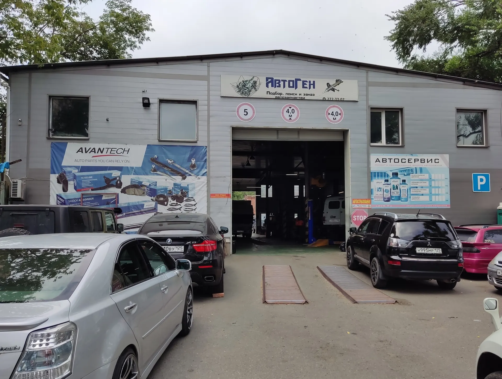
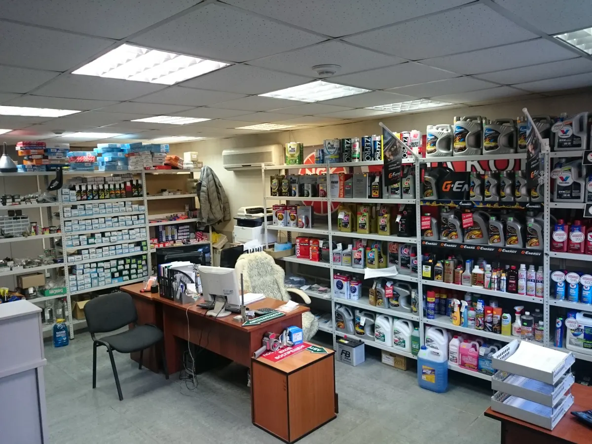
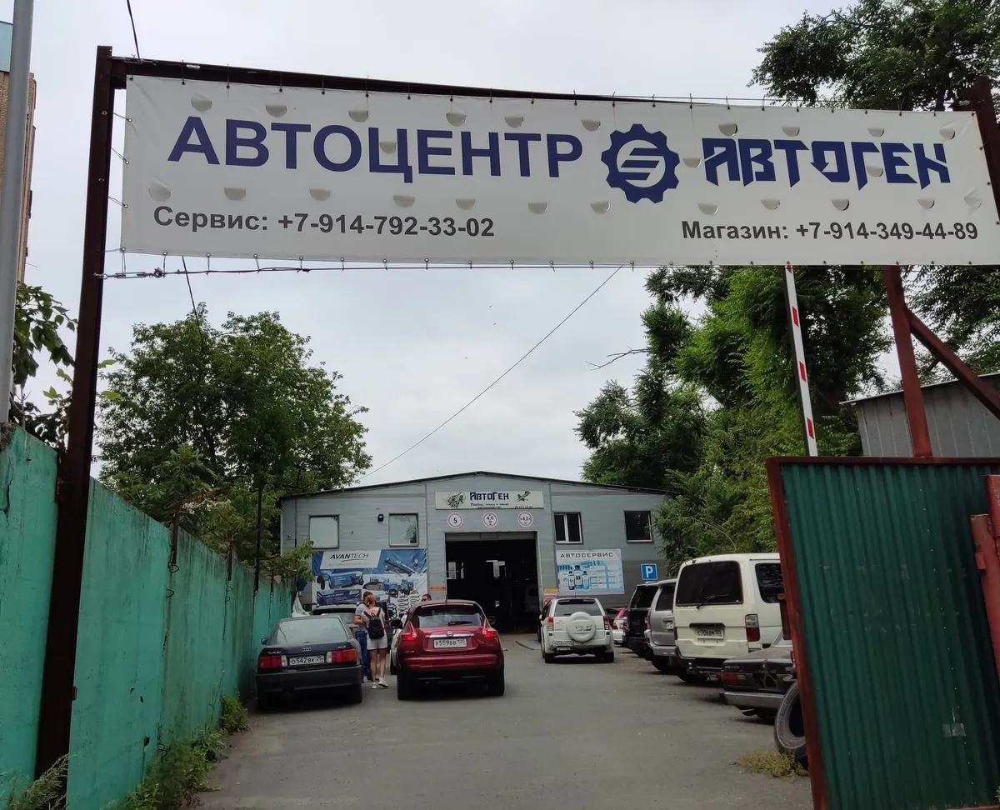
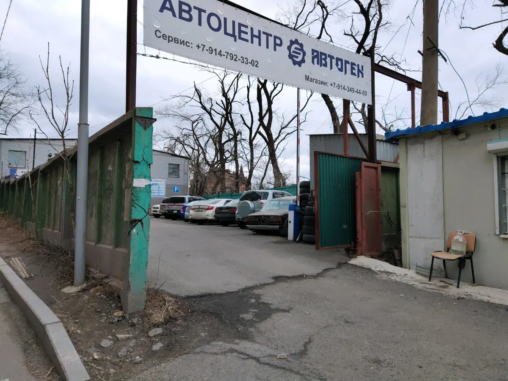

Автосервис и шиномонтаж · Владивосток
Автосервис и шиномонтаж во Владивостоке: диагностика, электрика, развал-схождение
Выберите услугу, день и время - чат откроется с готовым текстом. Ремонт, масло и запчасти, шиномонтаж и развал-схождение в одном месте.
- Ежедневно с 9:00 до 20:00
- Рейтинг 4,6, 91 оценка
- Магазин запчастей и масел при сервисе

Что ещё есть
Входит
- Магазин масел, фильтров и запчастей при сервисе
- Консультация: оригинал или аналог, что делать сейчас, а что отложить
- Работа с японскими, корейскими, европейскими и отечественными авто
- Оплата картой
Отдельно, если нужно
- Предварительная запись на день и время
- Звонок, если освободилось окно в графике
- Грузовые автомобили
Услуги
На карточке на Яндекс.Картах прайса нет, поэтому на демо цены стоят «уточнить». Здесь удобно показать их до звонка.
Ремонт и диагностика
- Диагностика автомобиляКлиенты пишут про диагностику и устранение неисправности.уточнить
- Базовое сервисное обслуживание, замена масла и фильтровКлиент пишет про большое ТО с заменой технических жидкостей за 6 часов.уточнить
- Ремонт ходовой: сайлентблоки, рычагиУслуги на фото владельца.уточнить
- АвтоэлектрикаКлиент пишет, что электрик знает своё дело.уточнить
- Кузовной ремонтУказано в особенностях карточки.уточнить
Шины и колёса
- ШиномонтажРубрика карточки.уточнить
- Развал-схождениеКлиент пишет, что отрегулировали сход колёс.уточнить
- Выездной и грузовой шиномонтажУказано в особенностях карточки.уточнить
- Хранение шинУказано в особенностях карточки.уточнить
Перечень услуг составлен по рубрикам карточки и отзывам клиентов, прайса на карточке нет. Актуальные цены уточняйте при записи.
Как записаться
- 01
Выберите услугу, день и время
В блоке записи вверху страницы.
- 02
Нажмите «Записаться»
Откроется чат с готовым сообщением - останется его отправить.
- 03
Дождитесь подтверждения
Мастер уточнит марку автомобиля и время.



Что говорят клиенты
Чёткая запись
Клиент пишет, что записывают на день и время, а освободившиеся окна предлагают по звонку.
Честность
Клиенты ценят честность и то, что меняют только нужное.
Объясняют выбор
Клиент пишет, что предлагают альтернативы по запчастям и объясняют, что делать сейчас.
Принимают без записи
Клиент пишет, что приехал без записи и его приняли сразу.
Отзывы с Яндекс.Карт
«Отрегулировали сход колес, приехали без записи приняли сразу, сделали все четко»
Михаил · 10 сентября 2026
«Хороший сервис, очень понравилось пунктуальность, честность, общение. Ремонтируются совсем не дешёвые автомобили. При большом ремонте ребята делают скидку.»
Илья Сайфулин · 21 мая 2025
«Ребята точно знают, что делают. Электрик, просто молодец. Комфортное местоположение, всегда отличный результат.»
Олег Косенко · 3 мая 2025
Отзывы с карточки на Яндекс.Картах, без правок.
Частые вопросы
Где находится автосервис?
Владивосток, проспект Острякова, 38А.
Как записаться?
Выберите услугу, день и время в блоке записи вверху страницы - откроется чат с готовым сообщением. Можно позвонить: +7 (914) 792-33-02 или +7 (423) 272-33-02.
Делаете ли вы шиномонтаж и развал-схождение?
Да, по карточке: шиномонтаж, развал-схождение, хранение шин, выездной и грузовой шиномонтаж.
С какими автомобилями вы работаете?
По карточке: японские, корейские, европейские, отечественные, легковые и грузовые.
Можно ли приехать без записи?
Клиент пишет, что приехал без записи и его приняли сразу. Загрузка бывает большой, поэтому лучше записаться.
Есть ли запчасти и масло?
Да, при сервисе есть магазин запчастей и автотоваров.
Как можно оплатить?
Оплата картой.
В какие часы вы работаете?
Ежедневно с 9:00 до 20:00.
Записаться в АвтоГен
- Адрес
- Проспект Острякова, 38А, Владивосток
- Часы
- Ежедневно 09:00-20:00
- Телефон
- +7 (914) 792-33-02